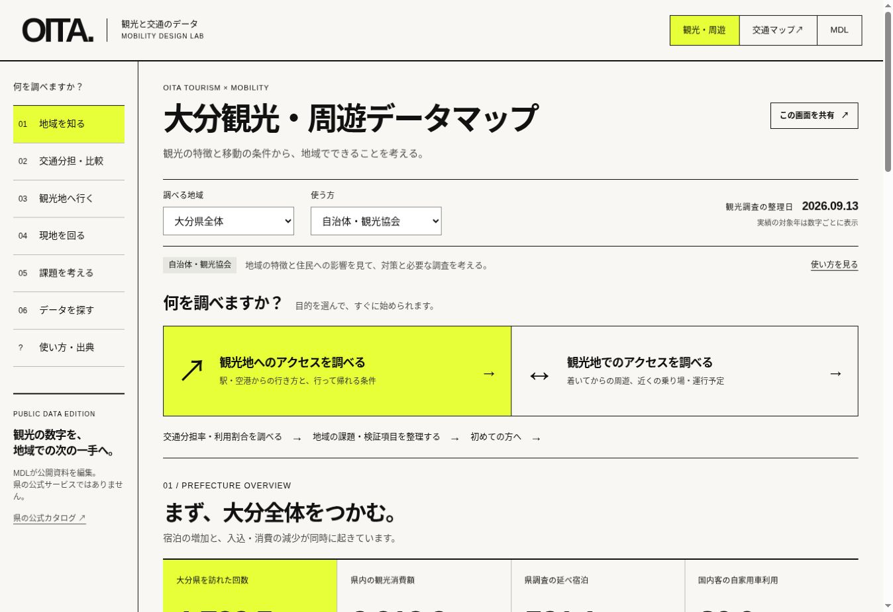

OITA TOURISM × MOBILITY / VISUAL CATALOG
観光の数字を、
次の移動へ。
大分観光・周遊データマップ
実際の画面でわかる、できること・使い方。
16REAL SCREENS

行き方。現地の移動。地域のデータ。
HOW TO USE THIS CATALOG
目的から選んで、写真でわかる。
写真をタップすると拡大できます。「この機能を開く」から実際に試してください。
01START
知りたいことから、
はじめる。
観光地への行き方、着いてからの移動、地域の数字。
最初の画面から、調べたいことへ進めます。
FOR 旅行・観光案内に使う方／観光と交通を企画する方
迷ったら、黄色い「観光地へのアクセスを調べる」から。
上部の「使う方」を選ぶと、利用目的に合う案内が表示されます。
この機能を開く ↗
02OVERVIEW
人数・宿泊・消費。
地域の特徴をつかむ。
大分県全体の観光データを、大きな数字で表示。
対象年と調査の範囲を、一緒に確認できます。
FOR 自治体・観光協会／事業企画・資料作成をする方
数字の下の「2025年」「従業員10人以上」まで読む。
HOW TO
- 「地域を知る」へ
- 「大分県全体」を選ぶ
- 対象年・出典を確認
入込・消費・宿泊は別の調査系列です。人数を割り算して宿泊率などを作らないでください。
この機能を開く ↗
03REGION
６市町を、
それぞれの問いから。
由布・別府・日出・宇佐・大分・国東。
市町を選ぶと、その地域の数字と課題を確認できます。
FOR 自治体・観光協会／地域で事業を考える方
例：由布市。年間客数と、由布院の昼の混雑を分けて考える。
HOW TO
- 市町を選ぶ
- 数字と注意点を読む
- 周辺の交通へ進む
年度や集計範囲が異なる市町を、客数の大小だけで順位付けしません。
この機能を開く ↗
04GETTING THERE
観光地まで、
どう行く？
出発地と行き先を、収録した13地点から選択。
公共交通・車の経路確認へ進めます。
FOR 旅行者・観光案内／宿泊・観光施設の方
「例から始める」の「暘谷駅 → ハーモニーランド」で試す。
HOW TO
- 「観光地へ行く」へ
- 出発地・行き先を選ぶ
- 経路か往復候補を見る
Google マップへは２地点と移動方法を引き継ぎます。旅行日・時刻・入口は地図側で指定します。
この機能を開く ↗
05CONDITIONS
行って、過ごして、
帰れる条件を入れる。
出発時刻・現地で過ごす時間・帰着期限を設定。
条件を変えると、直通バスの候補を更新します。
FOR 旅行・観光案内／交通事業者・施設の方
例：9時以降に出発、現地で2時間、18時までに帰着。
HOW TO
- 時刻表の対象日を選ぶ
- 出発・帰着時刻を入れる
- 滞在時間を選ぶ
照合は2026年9月8・12・13日の収録時刻表。現地での滞在に、移動などの余裕20分を加えます。
この機能を開く ↗
06ROUND TRIP
帰りの便まで、
一緒に確かめる。
行きと帰りを組み合わせた候補を表示。
出発・到着時刻、乗り場、乗車時間を確認できます。
FOR 旅行者・観光案内／宿泊・観光施設の方
例は9:10発・9:20着、帰り14:35発・14:44着。9/8の収録時刻表です。
HOW TO
- 往復候補を選ぶ
- 乗り場と時刻を確認
- 当日の運行を確認
直通バスの候補です。「候補なし」は「行けない」の判定ではありません。乗換や鉄道は外部地図で確認。
この機能を開く ↗
07GETTING AROUND
着いてから、
どう回る？
観光地周辺の乗り場と運行予定を、地図で確認。
次の立ち寄り先や、帰りの移動を考えられます。
FOR 宿泊・観光施設／交通事業者・観光案内の方
例：ハーモニーランド周辺1km。青が基準点、黒が当日の出発あり。
HOW TO
- 「現地を回る」へ
- 基準点・日・範囲を選ぶ
- 地図と周遊先を見る
範囲は直線距離です。歩行時間や道路・入口は別途確認。右側の観光統計も、期間を確認してください。
この機能を開く ↗
08STOPS & TIMETABLE
近くの乗り場を、
日ごとの本数で見る。
同じ名称でも、方向や事業者が違う乗り場を区別。
同じ乗り場を、既存の交通マップでも確認できます。
FOR 交通事業者／観光案内・交通接続を考える方
「同じ乗り場を交通マップで開く」から、交通データへつなぐ。
HOW TO
- 「近くの乗り場」を見る
- 方向・事業者・本数を確認
- 同じ乗り場を地図で開く
本数は運行予定で、利用人数や空席ではありません。「0本」は選んだ日・収録データ内の表示です。
この機能を開く ↗
09TRANSPORT USE
国内客と海外客。
使う交通の違いを見る。
自家用車・レンタカー・鉄道・バスなどの利用割合。
移動手段に応じた案内や接続を考える入口です。
FOR 自治体・観光協会／交通事業者・施設の方
県平均の割合を、個別施設の需要や６市町の分担率に置き換えない。
HOW TO
- 「交通分担・比較」へ
- 「国内客・海外客の交通」
- 割合と回答数を読む
複数回答の利用割合で、合計100%の交通分担率ではありません。県全体の調査で、海外居住者は200回答です。
この機能を開く ↗
10COMPARABLE DATA
同じ年・同じ調査で、
宿泊を比べる。
県の同じ宿泊調査で、地域ごとの違いを確認。
比較できる数字と、未取得の数字を分けて表示します。
FOR 自治体・観光協会／宿泊施設・分析担当の方
由布市独自の宿泊人数と、県調査の延べ人泊は別の数字です。
HOW TO
- 「交通分担・比較」へ
- 「県調査の宿泊」を選ぶ
- 対象範囲を確認する
2025年・従業員10人以上の対象施設の延べ人泊です。未取得をゼロや「宿泊がない」と解釈しません。
この機能を開く ↗
11TIME & PLACE
いつ来る？
どの地区に泊まる？
由布市は月ごとの日帰り・宿泊、別府市は宿泊地区。
時期と場所の偏りを、別々のグラフで見られます。
FOR 観光協会／宿泊・観光施設／交通事業者の方
年間の合計から、時期・地区ごとの違いへ視点を移す。
HOW TO
- 「月別・地区別」を選ぶ
- 月の動きと地区を見る
- 交通を調べる時期を決める
由布は2025年、別府は2024年です。月間客数や宿泊地区だけでは、昼間の混雑地点は分かりません。
この機能を開く ↗
12PEAK SEASON
繁忙期は、
施設ごとに確かめる。
ゴールデンウイークの同じ８日間を、前年と比較。
施設ごとの来訪状況を一覧で確認できます。
FOR 観光施設／自治体・観光協会／交通事業者の方
施設への来訪と、道路・駐車場・駅接続の調査を組み合わせる。
HOW TO
- 「GWの施設入場」を選ぶ
- 前年と今年の値を見る
- 施設周辺の交通を調べる
各年4月29日～5月6日の主要10施設を掲載。市町全体や県全体の年間観光客数ではありません。
この機能を開く ↗
13QUESTIONS TO TEST
数字を見たら、
次に測ることを決める。
資料で確認できる事実と、検証が必要な仮説を整理。
地域ごとの検証項目を、打合せ用メモとして保存できます。
FOR 自治体・観光協会／コンソーシアム・事業企画の方
例：由布市。車流入・駐車待ち・周辺地区の立ち寄りを測る。
HOW TO
- 「課題を考える」へ
- 地域と確認事項を読む
- 「検証項目を保存」
実測の混雑マップではありません。住民の移動、待ち時間、滞在・消費を現地で確かめるための整理です。
この機能を開く ↗
14SEARCH & CSV
必要な数字を探し、
資料づくりに使う。
地域・キーワード・種類・対象年で検索。
表示中のデータを、出典付きCSVで保存できます。
FOR 自治体・観光協会／研究・事業企画・資料作成の方
例：日出町、ハーモニーランド、2026年。見たい数字を１件に絞る。
HOW TO
- 「データを探す」へ
- 地域・言葉・年で絞る
- 「表示中のデータをCSV保存」
「この画面を共有」では地域や画面の条件を共有できます。検索語・種類・対象年の絞り込みは引き継ぎません。
この機能を開く ↗
15PROVENANCE
その数字は、
何を数えたもの？
指標名を押すと、単位・対象期間・調査方法を表示。
原典を開いて、数字の根拠を確認できます。
FOR 数字を説明する方／企画・判断・資料作成をする方
「系列」「対象・方法」「原典」の３か所を確認する。
HOW TO
- 指標名を押す
- 単位・対象・注意点を読む
- 「原典を開く」
例の33,345人は、ハーモニーランドの2026年GW８日間の入場者。日出町の年間観光客数ではありません。
この機能を開く ↗
16USER GUIDE
迷ったら、
自分に近い例から。
利用者別の使い方と、具体的な操作例を掲載。
できること・追加確認が必要なことも整理しています。
FOR 初めて使う方／他の人へアプリを紹介する方
由布の課題、ハーモニーランド周辺、別府の地獄エリアから試せます。
HOW TO
- 「使い方・出典」へ
- 自分に近い使い方を選ぶ
- 操作例のリンクを押す
アプリは登録・ログインなしで閲覧できます。実際の運行、施設の営業、歩行・バリアフリー条件は別途確認。
この機能を開く ↗
ACTION / START WITH ONE PLACE
まずは、
ひとつの場所から。
地域を知る。移動を確かめる。次に測ることを決める。
アプリは、その会話を始めるための道具です。
掲載写真は2026年9月13日のPC実画面です。交通は2026年9月8・12・13日の収録時刻表に基づきます。実際の運行・営業・歩行条件は別途確認してください。